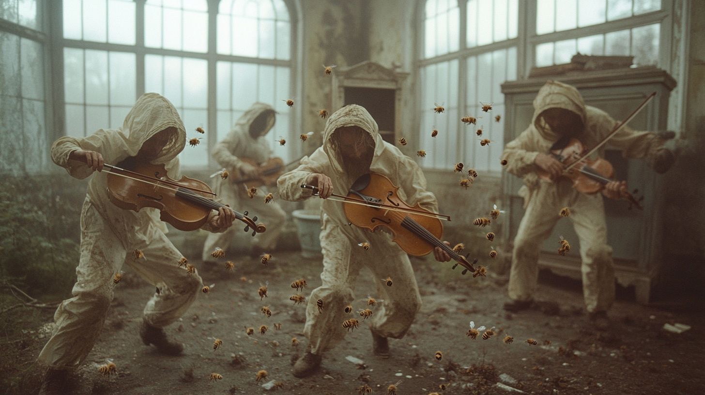
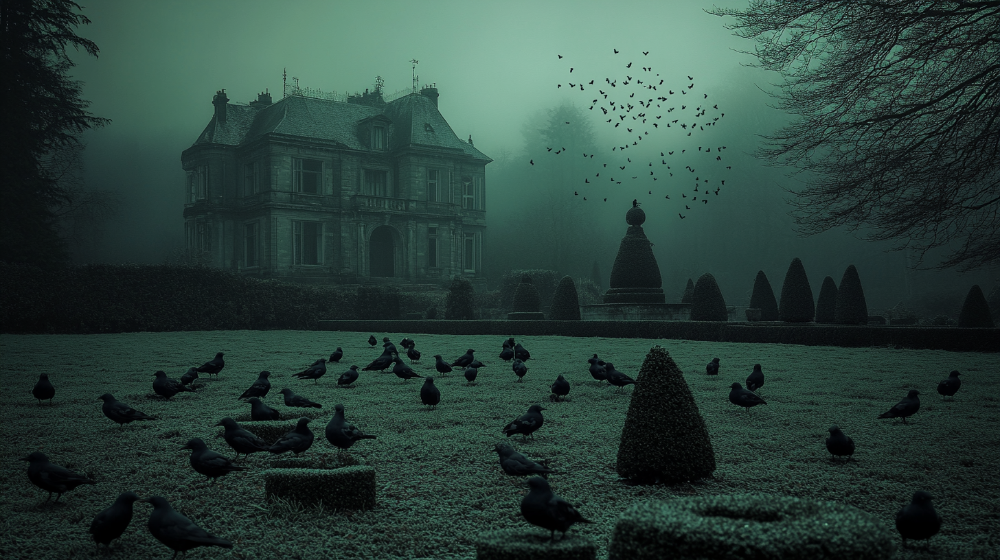
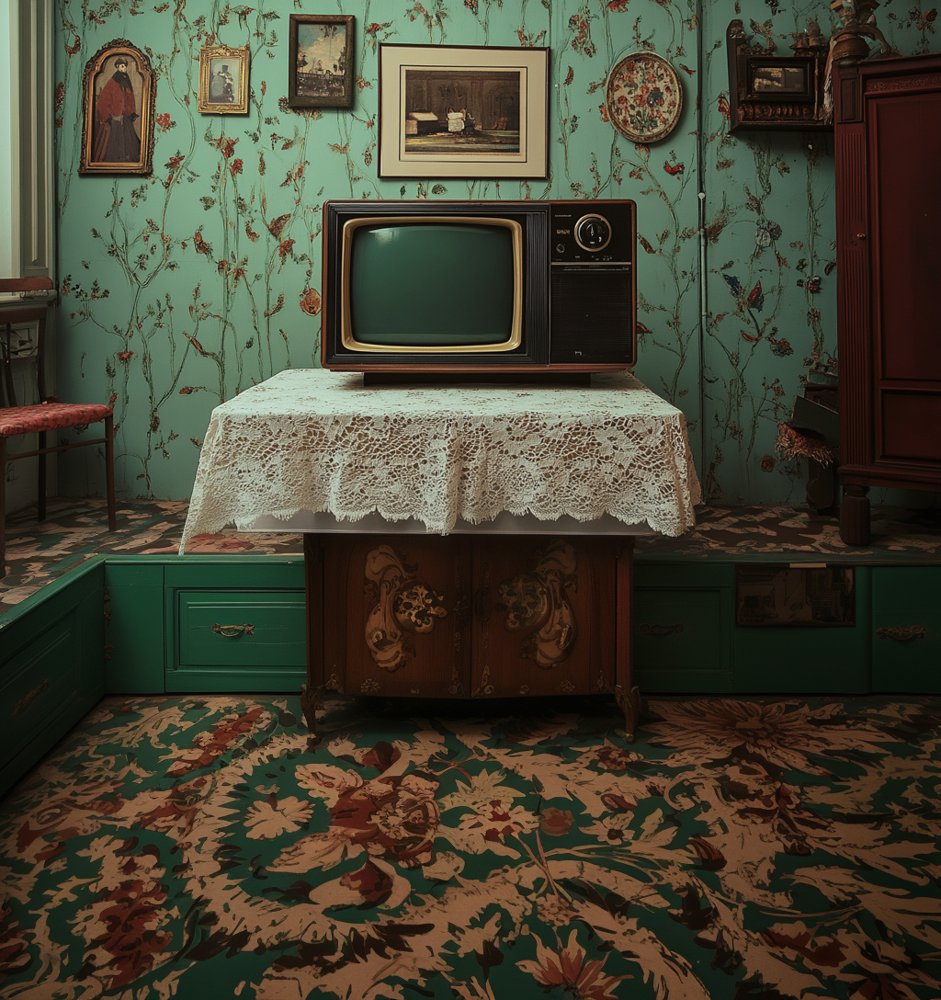

Good Eggs
February 7 Release
— The Speculator
Set in a not-too-distant future where humanity has transcended aging, labor, and mortality, Good Eggs centers on a group of "holdouts" who reject post-humanist integration. These mostly elderly residents inhabit decayed, waterlogged Victorian mansions surrounded by overgrown topiary gardens. They embrace analog traditions and absurd rituals: flooding rooms for synchronized swimming, performing cheerleading routines for no audience, clipping hedges only to glue the leaves back on, restoring ruined artworks just to let them decay again, and stacking vintage TVs in playful, chaotic arrangements. Unlike their hyper-advanced counterparts, they permit themselves to feel pain, get nicked when shaving, and age ungracefully.
The tactile, ephemeral existence of the holdouts contrasts with a society that prizes sterile perfection and virtuality. In the hyperfuturized world, people appear perpetually youthful, their ailments seemingly healing on command. Occasionally, drone-like machines breach the mansion's periphery, observing the residents with a mix of curiosity and detachment. In one pivotal moment, a mechanical insect-like drone delivers an egg—a fragile, enduring symbol of life—to a mechanically augmented man from the futuristic world. This wordless exchange bridges the two realms, offering a reflection on mortality, memory, and the resistance to progress.
Music is a shared language between the holdouts and the insect world. Boisterous and improvised, the holdouts' compositions stand in contrast to the abstract, holographic performances of the future. They even perform routines for and sometimes with the insects, blending playfulness with poignancy.
Good Eggs explores the bittersweet absurdity and quiet beauty of preserving old ways in a world determined to leave them behind.

Director's Statement
With Good Eggs, I set out to create a kaleidoscopic story about resistance in a world that has moved beyond mortality, labor, and decay. The film centers on a group of "holdouts" who reject post-humanist integration, clinging instead to tactile rituals and ephemeral experiences. Their lives are absurd, poignant, and defiant—a reflection of the tension between preserving old ways and a society obsessed with perfection and progress.

The narrative begins and ends with a television—an everyday portal that blurs the line between reality and alternate realms. In the opening, we take the perspective of a TV watcher flipping through channels, eventually stopping on a serene image of bees. In the background, faint sounds of a girl—perhaps a sibling—practicing violin introduce a subtle unease. Her hesitant notes gradually transform into the film's score as the imagery of the bees becomes the entry point into an imagined world. This layering of sensory elements—the buzzing of bees, the imperfect violin, and the flicker of television light—serves as a transition into a dreamlike realm where the story unfolds. By the film's end, a bee escapes from the TV screen into the room, suggesting the experience was as much internal as it was cinematic.

As my second short film, Good Eggs builds on lessons from Orangerie, exploring the possibilities of generative tools for visual and narrative experimentation. Working with a wide range of platforms—including Runway ML, Kling AI, Hailuo, Krea, Eleven Labs, Pika Labs, LumaLabs Dream Machine, Suno AI, Midjourney, Adobe Firefly, and Premiere Pro—I aimed to create a cinematic experience that draws on my background as a painter while embracing the fluidity and unpredictability of AI. The resulting film blends science fiction with surrealist undertones and compositions influenced by painting.
Thematically, Good Eggs meditates on impermanence, tradition, and the interplay of analog and virtual. Stylistically, it reflects my fascination with mysterious, decayed elegance and weathered grandeur. This project would not have been possible without the collaborative potential of AI, yet every decision was guided by human creative instincts. In this way, Good Eggs mirrors its own narrative tension between the analog and the artificial.
My hope is that Good Eggs sparks reflection and invites viewers to consider what might be worth holding onto in a world determined to leave the past behind.